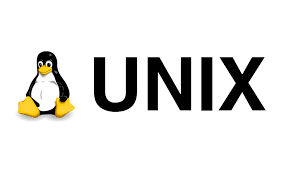

unix os

Links:
Unix was originally written in assembly language. Ken Thompson wrote B, mainly based on BCPL, based on his experience in the MULTICS project. B was replaced by C, and Unix, rewritten in C, developed into a large, complex family of inter-related operating systems which have been influential in every modern operating system .
The Unix-like family is a diverse group of operating systems, with several major sub-categories including System V, BSD, and Linux.
The name "UNIX" is a trademark of The Open Group which licenses it for use with any operating system that has been shown to conform to their definitions.
"UNIX-like" is commonly used to refer to the large set of operating systems which resemble the original UNIX.
Unix-like systems run on a wide variety of computer architectures.
They are used heavily for servers in business, as well as workstations in academic and engineering environments. Free UNIX variants, such as Linux and BSD, are popular in these areas.